나란히 비교 — 덱과 상용 실물
왼쪽이 이 레포의 덱이고 오른쪽이 같은 배율(1920x1080)로 찍은 상용 화면이다. 밀도와 대비와 리듬을 같은 크기에서 견준다. 참조 캡처는 qa/reference/ 에 있고 덱 캡처는 qa/final/ 에 있다.
정지 구성 — 항목 셋을 한 화면에 펼치는 쪽
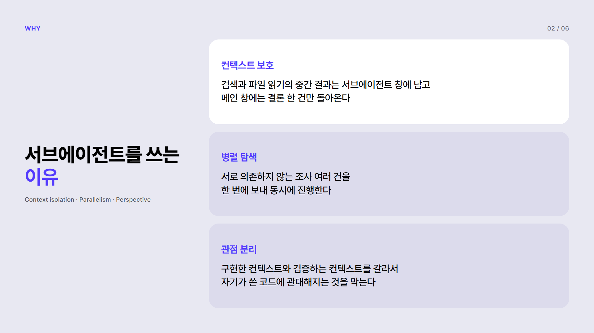
덱 1호 2쪽 · hierarchical-grid
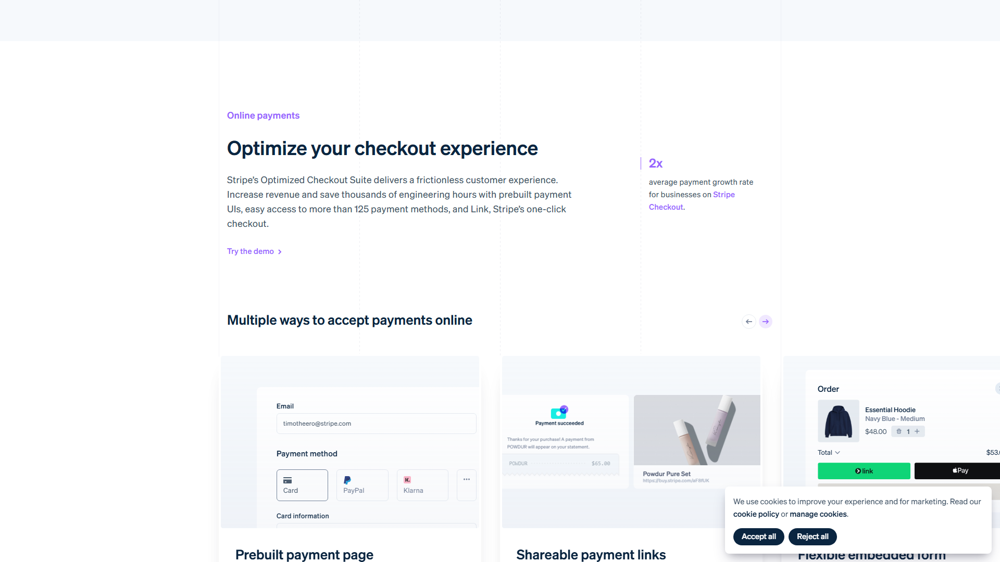
Stripe Payments · 섹션 표제와 본문과 우측 지표
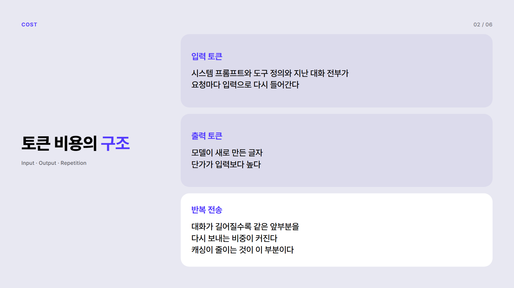
덱 2호 2쪽 · hierarchical-grid
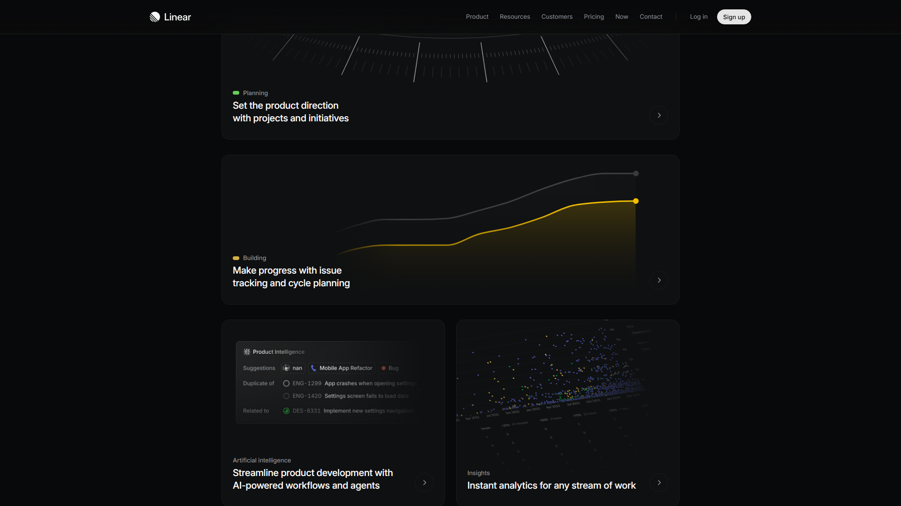
Linear Features · 기능 타일 그리드
장치가 화면을 쓰는 쪽
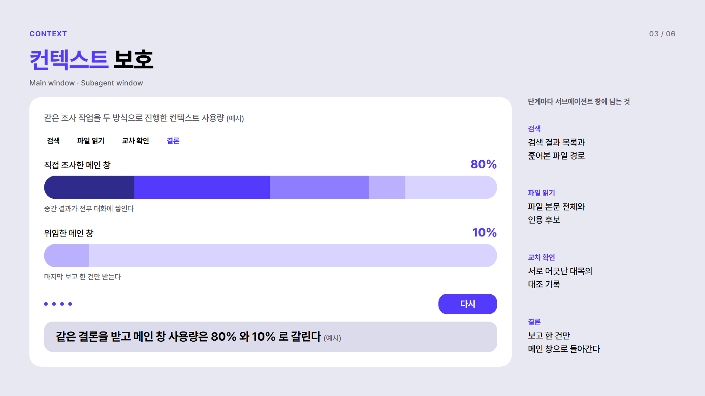
덱 1호 3쪽 완료 · advance-machine
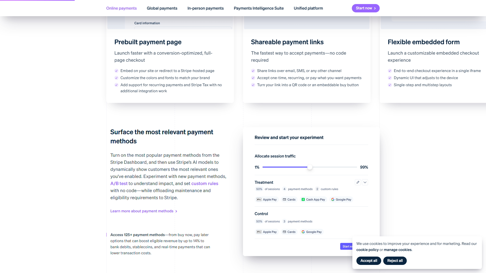
Stripe Payments · 제품 화면 카드
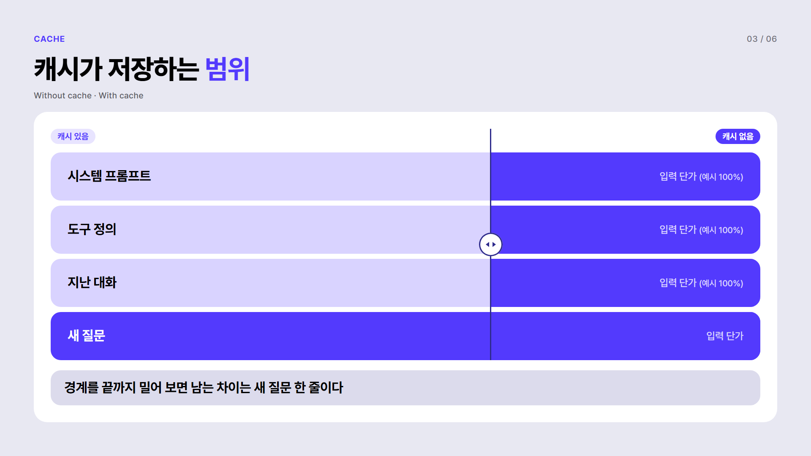
덱 2호 3쪽 완료 · drag-compare
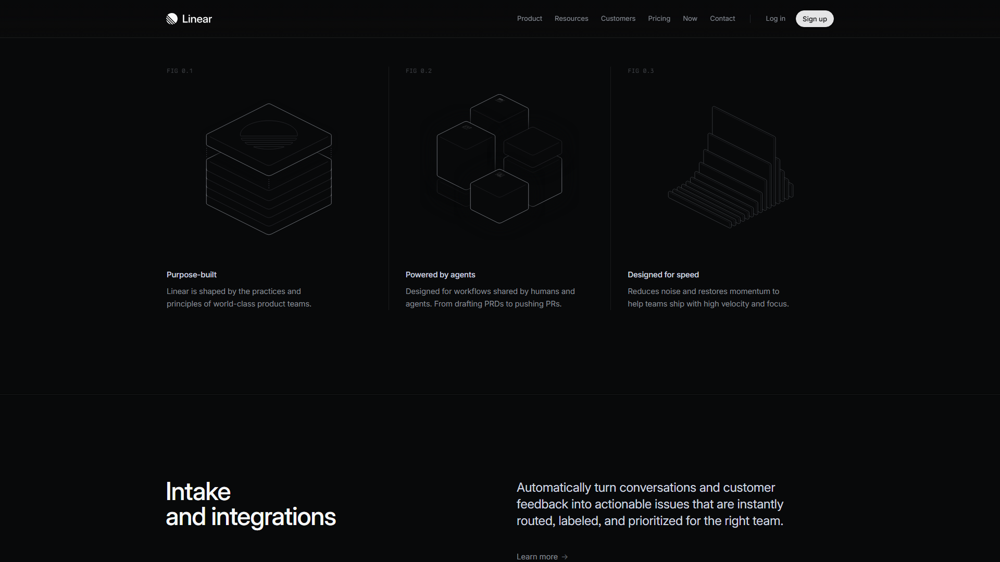
Linear Home · 대비 구성
조작 창과 관찰 창
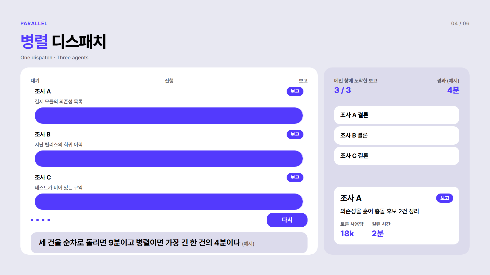
덱 1호 4쪽 완료 · simulate-console
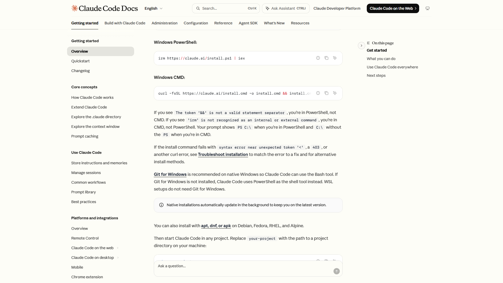
Claude Code 문서 · 인터랙티브 위젯
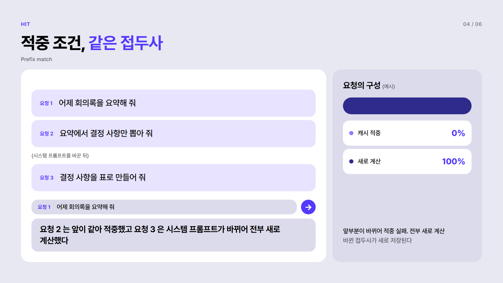
덱 2호 4쪽 완료 · input-sandbox
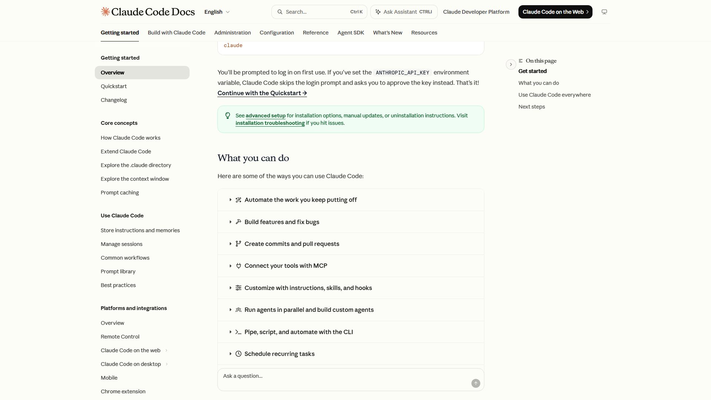
Claude Code 문서 · 본문과 코드 블록
큰 글자가 화면을 장악하는 쪽
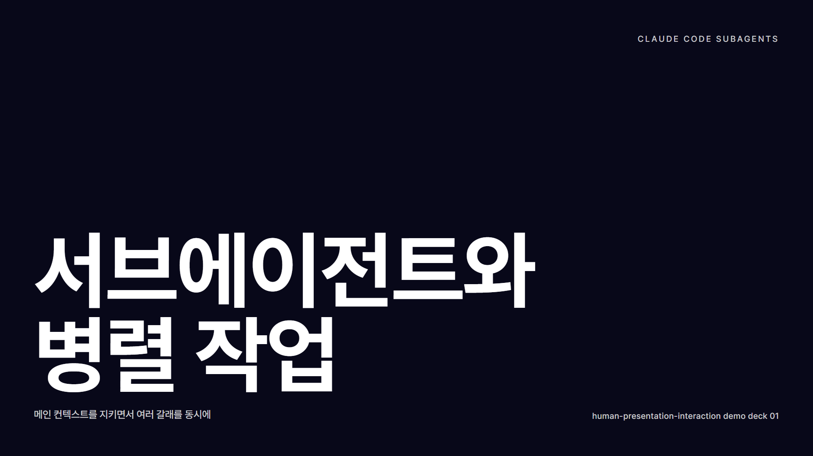
덱 1호 표지 · oversized-type
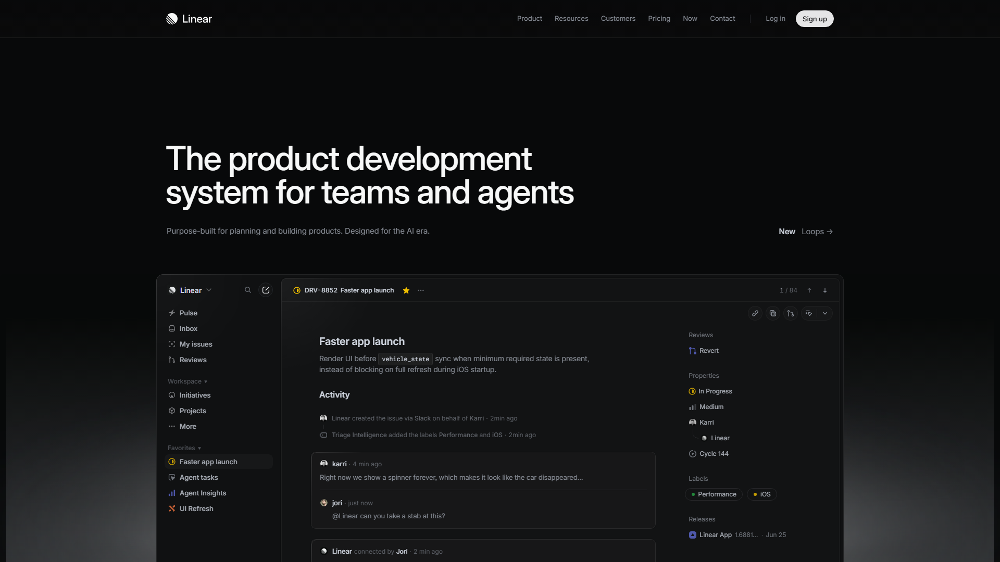
Linear Home · 히어로
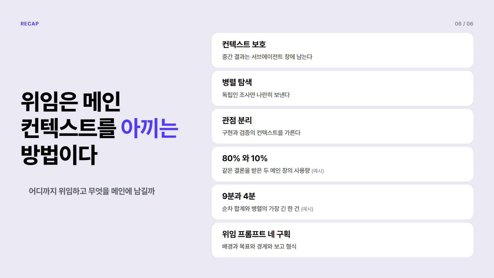
덱 1호 6쪽 완료 · accumulate-recap
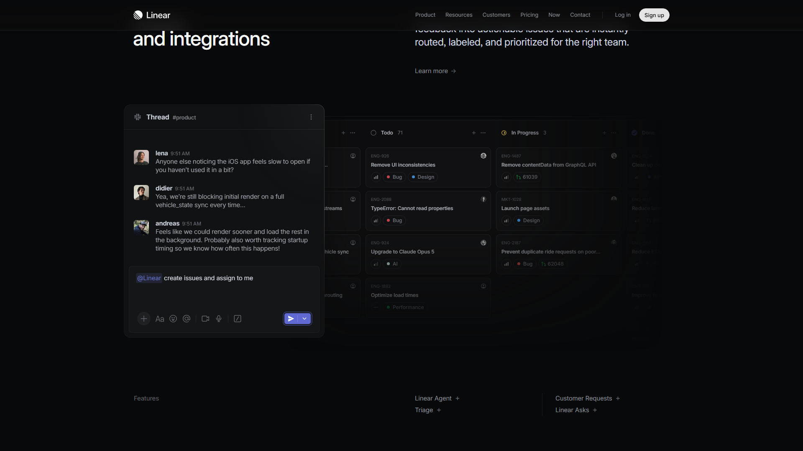
Linear Home · 큰 문장과 목록
넓은 화면 (2560x1080)
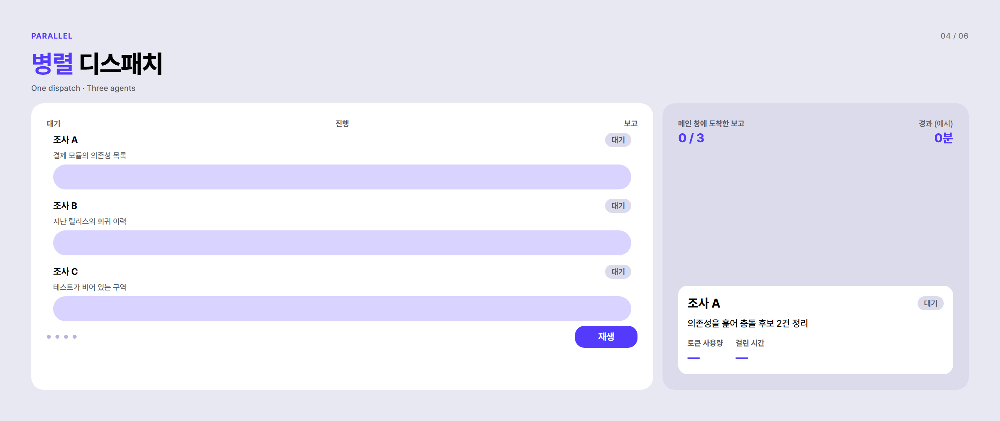
덱 1호 4쪽 · 폭 2560 에서 열이 늘어난다
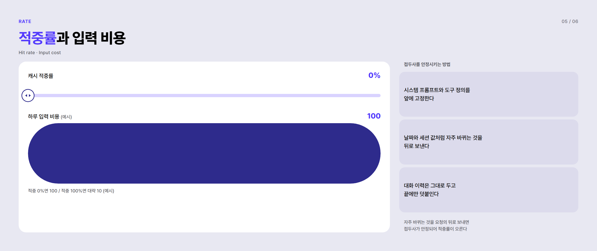
덱 2호 5쪽 · 폭 2560